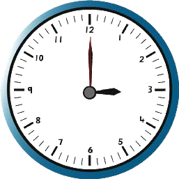
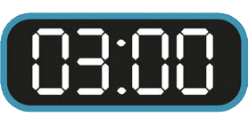

Majibu
(a)Saa 10 na dakika 10 (10:10).
(b)Saa 6 na dakika 20 (6:20).
(c)
Saa 7 na dakika 35 (7:35).au saa 8 kasoro dakika 25.
(d)Saa 2 na dakika 5 (2:05).
(e)Saa 12 na dakika 45 au saa 1 kasoro robo (saa 1 kasoro dakika 15 au 12:45)
(f)Saa 5 na dakika 45 au saa 6 kasoro robo (saa 6 kasoro dakika au 5:45)
(g)Saa 9 na dakika 45 (9:45) au saa 10 kasoro robo (saa 10 kasoro dakika 15)
(h)Saa 2 na dakika 50 (2:50) au saa 3 kasoro dakika 10
(i)Saa 6 na dakika 40 (6:40) au saa 7 kasoro dakika 20
(j)Saa 4 na dakika 55 (4:55) au saa 5 kasoro dakika 05
Zoezi la 2
1.Chunguza nyuso za saa zifuatazo, kisha jibu maswali yafuatayo:
A

B

(a) Uso wa saa A ni wa aina gani?
(b) Uso wa saa B unaonesha muda gani?
(c) Uso wa saa A unaonesha muda gani?
(d) Kuna tofauti gani kati ya uso wa saa A na B?